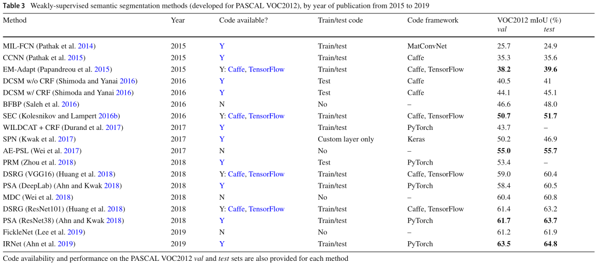
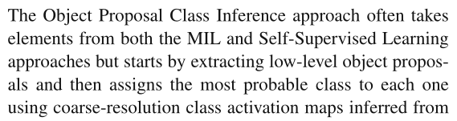
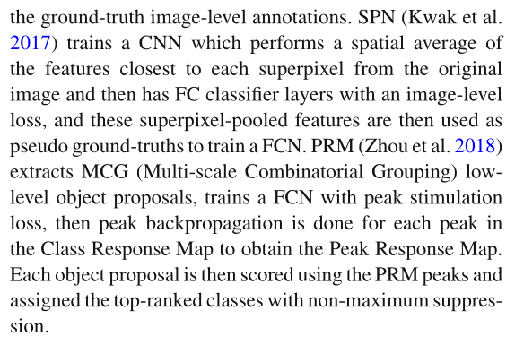
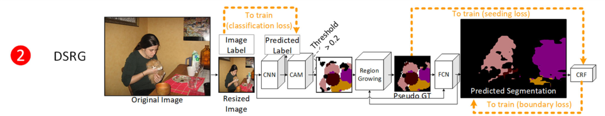
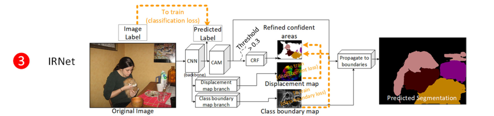
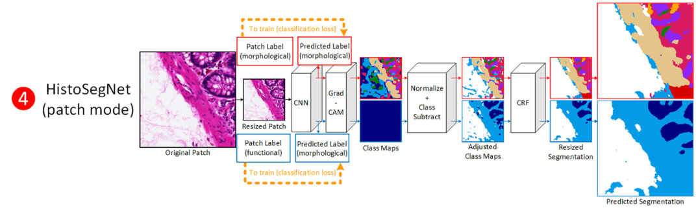
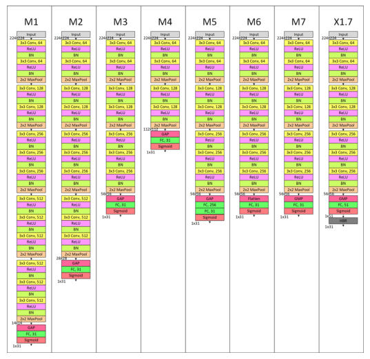
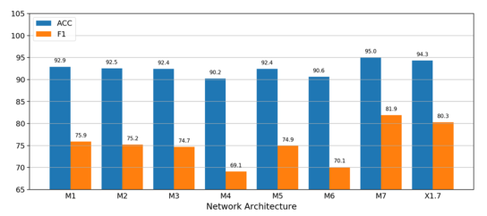
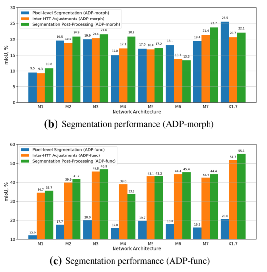
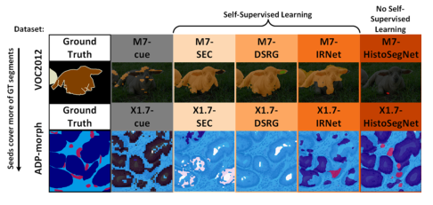

论文题目： A Comprehensive Analysis of Weakly-Supervised Semantic Segmentation in Different Image Domains
论文下载： https://link.springer.com/article/10.1007/s11263-020-01373-4
源码地址： https://github.com/lyndonchan/wsss-analysis
这是发表在 IJCV2021 上的一篇关于弱监督语义分割的综述论文，本文详细的测试了近年来几种不同图像域（自然图像，组织病理切片，卫星图像）上 sota 的弱监督语义分割方法在其他图像域上的表现，并分析了不同图像域图像的特点以及如何选取合适的弱监督语义分割方法。本篇笔记本人只关注其中的图像级弱监督语义分割问题，对于其他方法有描述不当的地方欢迎路过的大佬指正。
# Abstract
尽管只使用缺少位置信息的图像级标签进行训练，最近提出的弱监督语义分割方法还是取得了令人印象深刻的性能。由于图像级标签便宜且省时，弱监督的语义分割方法比全监督的方法更加实用。这些方法主要是为了解决自然场景图像的背景分离和部分分割问题的，目前尚不清楚它们是否可以简单的移植到其他图像领域并且仍能表现良好，如病理切片和卫星图像等。本论文评估了在自然图像、组织病理图像和卫星图像数据集上最先进的弱监督语义分割方法，并分析了如何确定哪种方法更适合某一给定的数据集。我们的实验表明，与自然场景的图像相比，组织病理学图像和卫星图像表现出一组不同的关于弱监督语义分割的问题比如模糊的边界和类共现问题等。
# Introduction
Multi-class semantic segmentation 可以完成许多工作如作为注意力机制使模型只关注相关的区域；将像素转化为更高层（具有更多语义信息）的表示如物体定位，形状，大小，纹理（texture），姿势或动作等以促进对图像的进一步分析。自然图像中的语义分割可以监测交通流量，从图像中分割人或者收集人群统计数据等。组织病理图像中的语义分割可以监测异常形状的肾组织，量化细胞大小和密度，并可以构建基于组织的图像检索系统等。卫星图像中的语义分割可以检测农田里面的杂草，洪水区域以及量化城市发展等。
尽管全监督的语义分割方法性能令人振奋，其所需要的像素级标注过于耗时费力且昂贵。弱监督的语义分割方法使用比像素级标注信息量更少的标注完成语义分割任务，大大节省了人力时间成本，从而节省了金钱成本。据统计，MS COCO 数据集的标注者为一张图像做图像级标签平均需要 4.1 秒，而为一张图像做像素级标注则需要平均 10.1 分钟，是图像级标签的 150 倍。
定性的说，使用图像级标签的弱监督语义分割方法需要仅根据一个物体是否存在来确定其在图像中的位置，目前在自然图像上的弱监督语义分割方法只用了全监督语义分割方法一部分的标注却可以得到优秀的性能。由于图像级标签完全缺少位置信息，我们总结了目前的在自然图像上的弱监督语义分割方法的困难：
- 从背景中分割出前景物体，尤其是背景中包含与前景目标有强共现性的物体时，如水和船，我们只知道图片中有船，但是大部分有船的图片都有水，因此只根据图像级标签训练的模型便无法准确地区分出船和水的边界。
- 区分强共现性物体。同上一点一样，如果两种物体频繁的共同出现，模型便很难区分出他们的边界。
- 分割出完整的物体而不是物体最值得注意（discriminative）的部分，比如我们需要分割出整个猫而不是仅仅分割出猫的头。众所周知，分类网络在优化 cross entropy loss 的时候只需要给最值得注意的区域（如猫的头）很高的激活值，该物体的其他区域完全可以不去管他，这就造成了模型很容易分割出一个物体最值得注意的部分却很难完整的分割出来整个物体。解决该问题的方法有：（1）使用具有更大感受野的模型。（2）使用擦除或空间区域 dropout 的方法使模型关注到最值得注意的区域以外的地方。（3）使用语义相似性信息将最值得注意的区域传播到物体的整个范围。
自然场景图像和组织病理图像以及卫星图像的区别：
- 自然场景图像包含更多粗粒度的视觉信息（即低类内差异和搞类间差异），而卫星图像和组织病理图像包含更多细粒度的对象（即高类内差异和高类间差异）。
- 组织病理图像和卫星图像的边界不明确，甚至专家在标注这些图像时也很难达成一致。
- 组织病理图像和卫星图像总是以相同的比例和视角成像，遮挡和光照变化最小。
这些差异使得不能盲目地将自然图像的方法用于其他图像，甚至完全不同的方法在其他图像上可能表现更好。
# Related Work
作者在这一部分介绍了三个图像域中具有代表性的数据集和弱监督语义分割方法，数据集部分我就不再赘述了，我们直接跳到方法部分。
# Weakly-Supervised Semantic Segmentation
已经提出的弱监督语义分割方法主要可以分为以下四类：Expectation-Maximization, Multiple Instance Learning, Object Proposal Class Inference, and Self-Supervised Learning.
表 2 根绝各个方法的共同特症列出了各个方法：

表 3 根据时间顺序列出了各个方法以及其代码可用性和在 PASCAL VOC2012 上的性能：

# Expection-Maximization
这类方法我暂时还没有看懂，等我看懂了再补。
# Multiple Instance Learning
通常的 Multi-class classification 一般指给定一个样本和其所属的类别作为标签训练一个分类模型模型，而以二分类为例解释 Multi Instance Learning 的做法则是：给定一堆样本，只要其中有一个阳性样本则这堆样本的标签就是阳性，如果所有的样本均为阴性样本则该堆样本的标签才是阴性，以此作为输入设计算法。
- MIL-FCN (2014): 该方法训练一个以 卷积层和全局最大值池化层为 head 的模型，以图像级标签作为监督信号。在推理阶段则是预测每个位置处最可能的类别，然后将预测图上采样到原图大小。
- DCSM (2016): 用图像级标签训练一个 CNN 然后利用 GBP (guided back-propagation) 在中上层（我也不清楚中上层指的是深层还是浅层的卷积层）的卷积层中获得类激活图，然后用这些图进行作差和平均的操作获得不同层和尺度的激活图，最后用 CRF 进行后处理。
- BFBP (2016): 看不懂 (trains a FCN with a foreground/background mask generated by CRF on the scaled average of conv4 and conv5 features with cross-entropy loss between the image-level annotations and the LSE pool of foreground and background-masked features; CRF post-processing is applied at test time.)
- WILDCAT (2017): 看不懂 (trains a FCN with conv5 features being fed into a WSL transfer network, then applies class-wise average pooling and weighted spatial average of top- and lowest-activating activations; at test time, it infers the maximum-scoring class per position and post-processes with CRF.)
# Object Proposal Class Inference
这些方法目前我还看不懂，有空再补。


# Self-supervised Learning
这种方法与 Multi Instance Learning 的方法类似，即使用推理生成的像素级激活图作为伪标签进行自监督学习。在实际操作中，我们通常的做法是先训练一个”backbone“分类网络以生成 CAM seeds 然后使用 CAM seeds 训练 FCN 用于最终的分割任务。
- SEC (2016): 这是这类方法的一个典型代表，它训练一个 CNN 并将生成的 CAM 作为训练 FCN 的伪标签，训练 FCN 时的监督信号有图像级的标签，CRF 处理过的 CAM 伪标签。
- MDC (2018): 其在训练 CNN 的时候使用了 multi-dilated convolutional (空洞卷积)，并将空洞卷积用于生成 CAM 的过程然后生成伪标签并和 class score-weighted maps 训练 FCN 网络。
然而，以上两种方法存在的问题是：最终得到的分割结果只能很好的分出最值得注意的区域。其中一种方法是使用对抗或随机擦除（adversarial or stochastic erasing）的方法，从而使模型可以关注到最值得注意的区域以外的区域：
- AE-PSL (2017): 和 SEC 一样，该方法也是生成 CAM 作为伪标签训练 FCN，不同的是：在训练 CNN 的过程中，高激活分数的区域会被从训练图片中擦除。
- FickleNet (2019): 利用图像级标签训练 CNN，，其在后面的卷积层中具有中心固定的空间维度的 dropout（通过丢弃卷积窗口中非中心的像素实现），然后多次使用 Grad-CAM 生成阈值化的伪标签以训练 FCN。
另外一种解决方法是简单的将类激活从自信度较高的区域传播到相邻的具有相似视觉特征的区域中，从而使生成的伪标签能覆盖到目标物体更广的区域：
- DSRG (2018): 训练一个 CNN 并且对生成的 CAM 使用 region-growing 的方法后生成伪标签用于训练 FCN。
- PSA (2018): 训练一个 CNN 并通过 random walk 的算法将 CAM 扩展到周围具有语义相似性的区域，从而生成伪标签用于 FCN 的训练。
- IRNet (2019): 该方法也是类似的思路，只不过该方法通过从 CAM 中获得的低位移场质心实施 random walk 算法来分割类的实例，直到类的边界，从而生成伪标签来训练 FCN。
值得一提的是：根绝在 PASCAL VOC 上的定量结果显示，前五的弱监督语义分割方法均是采用的 self-supervised learning 方法，并且其中三个还使用了将类激活传播的方法。
# Method
# Seed, Expand and Constrain(SEC)
该方法的训练包括四个阶段，其整体框架如下图：

- 用图像级标签训练一个分类网络
- 从分类网络中提取 CAM
- 将 CAM 阈值化并解决区域重叠冲突后作为种子（seeds/cues）
- 用生成的种子（seeds）进行 FCN 的自监督训练
四个阶段的细节如下：
- Classification CNN: 这里会用图像级标签训练两个分类网络：
- foreground network: VGG16 的变体，即将最后的两个 pooling 层和全连接层换成 GAP 和一个全连接层
- background network: VGG16 的变体，即省略了最后两个卷积模块
- CAM: 从 foreground network 和 background network 中分别提取 CAM
- Seed Generation: 对于 foreground network，其将最大激活值的 20% 作为弱的位置线索（weak localization cue）；对于 background network，添加背景类 CAM，应用 2D 中值滤波器，并将 10% 最低激活像素作为附加背景线索。 在线索重叠的区域，具有较小线索的类别优先。
- Self-Supervised FCN Learning: 训练的 FCN 网络有三个损失函数作为监督信号：（1）生成的 weak localization cues（2）图像级标签（3）将最终生成的 mask 最为输入传入 CRF 来作为最终分割结果的监督。
值得一提的是，该方法使用 denseCRF 最为最终结果的后处理手段。
# Deep Seeded Region Growing(DSRG)
该方法的整体框架如下图所示：

该方法与 SEC 主要有一下不同：
- 该方法不使用 background network 生成背景类的 activation map，而是使用一种现成的方法 DRFI 生成。
- 提取 CAMs 并以最大激活值的 20% 为阈值进行阈值化然后用卷积特征作为 region growing 的依据生成伪标签。
- 训练 FCN 的时候使用两个损失函数：（1）用第 2 步生成的伪标签作为监督信号。（2）将最终生成结果送入 dense CRF 后监督自身以学习更好的边界。
该方法在推理阶段也使用 dense CRF 作为后处理手段。
# Inter-pixel Relation Network(IRNet)
该方法的整体框架图如下所示：

该方法和 SEC 以及 DSRG 一样会使用 CAM 作为伪标签，但是不同的是该方法在 backbone 后设置两个 head 预测辅助信息而非直接预测最终的 mask。
- Classification CNN & CAM: 与 SEC 和 DSRG 类似，该方法训练一个分类网络（ResNet50）并从中提取 CAM。
- Seed Generation: 对于前景类，阈值设置为 0.3 并将其经过 denseCRF 处理后作为前景类的 seed，对于背景类，如果该区域没有前景的种子并且其激活值小于 0.05 则将其认为是背景区域，经过 denseCRF 处理后作为背景类的 seed
- Self-Supervised DF and CBM Learning: 上一步生成的前景和背景 seeds 在这一步中被作为伪标签训练 backbone 后面的两个分支：
- displacement field（DF，位移场），该分支用来预测每个位置对于 seeds 实例中心的位移
- class boundary map（CBM），该分支用来预测一个像素处是类边界的可能性（通过最大化不同类之间的像素处的值和最小化相同类之间的像素的值来获得）
- CAM Random Walk Propagation with CBM: 最后通过 random walk 算法将每一个类的预测区域传播到边界，CBM 的逆作为转移概率矩阵。
# HistoSegNet
该方法的整体框架图如下所示：

该方法训练阶段主要包括四个阶段：
- 用 patch-level 的标注训练一个分类网络
- 一个手工设计的 Grad-CAM
- 激活图（activation map）调整，如 background /other 的激活值，class suntraction 等
- denseCRF
各个阶段的细节如下：
-
Classification CNN: 用 HTT-label 训练一个分类网络，该网络是 VGG16 的变体：（1）将 softmax 层换为 sigmoid，（2）在每一个卷积层后面都加入 batchnormalization 层。（3）将 flatten 层换为 GMP（Global Max Pooling，全局最大值池化层）
-
Grad-CAM: 生成 Grad-CAM 后将其用 HTT 的 confidence 加权
-
Inter-HTT Adjustments: 该步骤就是对得到的 CAM 做一系列我看不懂的处理使其可以作为下一阶段的伪标签
-
Dense CRF: 对最终生成的预测图使用 Dense CRF 算法
-
Ablative Study
SEC 和 DSRG 使用 VGG16 来生成它们的定位种子，HistoSegNet 使用一个更浅的 3 个 block 的 VGG16 变体。我们不禁有这样一个疑问：“分类网络的网络结构对弱监督语义分割的性能是否有影响？” 这个问题在以前从来没有被探讨过，今天我们使用 8 种 VGG16 的变体来分析一下不同网络结构对 HisoSegNet 的影响。我们使用的八种结构分别称为 M1，M2，M3，M4，M5，M6，M7 和 X1.7，如下图所示：

其中 M1 到 M4 分析网络深度对模型性能的影响，他们都使用 GAP 和一个全连接层，但是卷积模块的数量分别是 5，4,3,2 个；M5 到 M7 分析向量操作的影响，他们都有 3 个卷积模块和一个全连接层，他们向量化的操作分别是 GAP，Flatten，GMP；最后，X1.7 分析 HBR 的影响：它和 M7 的结构相同但是在 51 个 ADP 的类上训练但只在 31 个分割类上测试。8 个结构全都在 Keras 上训练 80 个 epoch 使用 cycical learning rate 的学习率调整方法，batch size 为 16，分别测试分类和分割的性能。
分类的性能如下所示：

可以看出：更深的网络其分类性能更好，GMP 的效果比 GAP 和 Flatten 更好，另外，不使用 HBR 比使用 HBR 的性能更好。
分割的性能如下：

可以看出：对于形态学类型，使用 GMP 且不使用 HBR 的网络性能仍是最好，但对于网络深度而言，3 个 block 的时候分割的性能更好；对于功能类型，3 个 block 的网络性能仍然很好但是 Flatten 加 HBR 的效果却是最好的。
以上分析说明：分类网络的设计对后续的分割性能效果影响很大，更深的网络如 VGG16 在分类任务上的性能很好但对于和后续的分割性能却不是最好因为最终的 feature map 的分辨率很低。
# Performance Evaluation
# ADP
# Quantitative Performance

可以看出:
- 只有 HistoSegNet 的方法可以稳定的超过 Baseline Grad-CAM 的性能
- 对于该任务，X1.7 的网络结构比 VGG16 的要好
- SEC 表现最遭，DSRG 稍微好一点儿，IRNet 的表现与 Baseline Grad-CAM 相当
# Qualitative Performance

可以看出，对于形态学类型而言，X1.7 的网络结构比 VGG16 的效果更好（我的理解是 X1.7 的 feature map 分辨率更大，可以更好的对应小目标）。尽管 SEC 和 DSRG 可以更好的对应物体轮廓，他们却也会过分夸大物体大小。
# PASCAL VOC2012
# Quantitative Performance

可以看出：
- 只有 SEC 和 DSRG 可以稳定的超过 Baseline
- 对于该任务，VGG16 的结构整体上要优于 M7
- 使用 M7 的 SEC 效果最好
# Qualitative Performance

可以看出：
- VGG16 Grad-CAM 更能捕捉到完整的物体
- SEC 和 DSRG 可以修正原始 Grad-CAM 中的错误（可能是因为 seeding loss 比较适合这个数据集），但是 HistoSegNet 却总是将 Grad-CAM 中的分割结果联系到错误的类别。
- 图三中 VGG16 HistoSegNet 将桌子和人混淆了，而 M7 HistoSegNet 只分出了人的头和胳膊。
- 所有的方法都很难分出经常共同出现的类别如图 6 中的船和水
# DeepGlobe Land Cover Classification
懒得整理卫星图像的结果了，把定量和定性结果贴出来供大家参考。


# Analysis
# Effect of Classification Net Cue Sparseness
经分析可知，对于数据集中单张图片的平均目标物体数量较多，则产生稀疏 cue 的分类网络效果较好，因为这种网络的 feature map 分辨率较高需要更少的上采样；而如果数据集中单张图片的平均目标数量较少则相反。
# Is Self-supervised Learning Beneficial?
目前主流的弱监督学习方法是先训练分类网络生成弱的定位信息如 CAM 和 Grad-CAM，然后再用这些信息进行自监督学习训练一个 FCN。但是自监督学习是否对于所有图片域的图片都有效？观察结果是：自监督学习是否有帮助与阈值化的 Grad-CAM 与 ground truth 的覆盖程度有关。如下图所示：

Grad-CAM 对 PASCAL VOC 中羊的覆盖较小，后续使用自监督学习的效果更好，Grad-CAM 对 ADP 中的图片覆盖程度很好，不使用自监督学习的 HistoSegNet 的效果更好。
用召回率来衡量 Grad-CAM 对 ground truth 的覆盖程度的话，当召回率小于 40% 的时候，使用自监督学习的效果更好，当召回率大于 40% 的时候，使用非自监督学习的效果更好。这很直观，因为 CAM 和 Grad-CAM 因只能分割 VOC2012 中目标物体的一部分而臭名昭著，因此开发了带有损失函数的自监督方法，以通过奖励真阳性而不是惩罚假阳性来鼓励模型从小的种子中预测出完整的区域。虽然对于种子的召回率很低的情况下，这种策略有效，但是当种子覆盖大部分真实情况时，这显然是有害的。另外，通过减小阈值来提高召回率也不能增加自监督学习模型的性能。
# Addressing High Class Co-occurrence
图像级标签的弱监督语义分割是所有弱监督语义分割中标签信息量最少的一种，因为模型需要仅根据某物体是否在图片中来推测出该物体的位置、形状、大小等信息。而类共现性无疑是一个很大的挑战，因为如果训练数据中两个类别总是一起出现，那模型便很难区分出两个物体。作者在论文中通过简单的丢弃图片中所含目标物体类别较多的图片，证明了这种 class balance 的方法可以提高共现性很高的类的性能。但是这样丢弃了大多数训练数据之后还是造成了模型的性能下降，因此需要提出更合理的 class balance 的方法来提高模型的鲁棒性。
# Conclusion
我们论文的发现清楚地表明，主流方法不适合这些其他图像领域。我们认为需要做更多的工作来开发 WSSS 的替代方法，这些方法要么专门用于这些图像域，要么至少可以推广到它们。** 与其目前专注于提高激活图种子的召回率，不如设计新的损失函数来细化模糊的激活图边界或解决高级共现问题，** 这将是未来组织病理学和卫星图像探索的更好方向。从替代图像域中正确分割图像的最先进算法，作者认为必须做更多的工作来开发能够泛化到不同图像域的新方法。
# 我个人的感想
本文详细的比较了在自然图像和组织病理学图像上 SOTA 的几个方法在其他图像域上的表现，作者总结了弱监督语义分割的难点：
- 从背景中分割出前景
- 类共现问题
- 分割出完整的物体
作者分析了以下几种因素对分割性能的影响：
- 分类网络生成 cue 的稀疏性
- 是否使用自监督学习
- 类共现性的影响
作者在最后总结的时候还说到：与其目前专注于提高激活图种子的召回率，不如设计新的损失函数来细化模糊的激活图边界或解决高级共现问题。